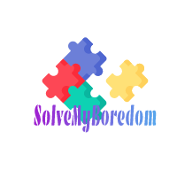

<!DOCTYPE html>
<html lang="en-gb">

<head>
    <meta charset="UTF-8" />
    <meta name="viewport" content="width=device-width, initial-scale=1" />
    <meta http-equiv="X-UA-Compatible" content="ie=edge" />
    <link rel="stylesheet" href="https://stackpath.bootstrapcdn.com/bootstrap/4.3.1/css/bootstrap.min.css" />
    <link href='https://unpkg.com/boxicons@2.1.1/css/boxicons.min.css' rel='stylesheet'>
    <link rel="stylesheet" href="./assets/css/style1.css" />
    <title></title>
    
</head>
	
<body>
   
</head>
<body>
  <nav>
    <div class="nav-content">
      <div class="toggle-btn">
        <i class='bx bx-plus'></i>
      </div>
      <span style="--i:1;">
        <a href="#"><i class='bx bxs-home'></i></a>
      </span>
      <span style="--i:2;">
        <a href="#"><i class='bx bxs-camera'></i></a>
      </span>
      </span>
      <span style="--i:3;">
        <a href="#"><i class='bx bxs-map' ></i></a>
      </span>
      <span style="--i:4;">
        <a href="#"><i class='bx bxs-cog' ></i></a>
      </span>
    </div>
  </nav>

  <script>

  // getting HTML elements
  const nav = document.querySelector("nav"),
        toggleBtn = nav.querySelector(".toggle-btn");

    toggleBtn.addEventListener("click" , () =>{
      nav.classList.toggle("open");
    });

  // js code to make draggable nav
  function onDrag({movementY}) { //movementY gets mouse vertical value
    const navStyle = window.getComputedStyle(nav), //getting all css style of nav
          navTop = parseInt(navStyle.top), // getting nav top value & convert it into string
          navHeight = parseInt(navStyle.height), // getting nav height value & convert it into string
          windHeight = window.innerHeight; // getting window height

    nav.style.top = navTop > 0 ? `${navTop + movementY}px` : "1px";
    if(navTop > windHeight - navHeight){
      nav.style.top = `${windHeight - navHeight}px`;
    }
  }

  //this function will call when user click mouse's button and  move mouse on nav
  nav.addEventListener("mousedown", () =>{
    nav.addEventListener("mousemove", onDrag);
  });

  //these function will call when user relase mouse button and leave mouse from nav
  nav.addEventListener("mouseup", () =>{
    nav.removeEventListener("mousemove", onDrag);
  });
  nav.addEventListener("mouseleave", () =>{
    nav.removeEventListener("mousemove", onDrag);
  });

  </script>

</body>
</html>
 


    


    <div class="container">
      <div class="row">
        <div class="col-sm-6 col-12">
        <div class="flip-card">
            <div class="flip-card-inner">
              <div class="flip-card-front"> Youtube video player
              </div>
              <div class="flip-card-back">
                <button class="youtube">Button</button>
              </div>
            </div>
          </div>
        </div>
      </div>
      </div>
    </div>
    
    
      <div class="full-height">..</div>
      


    <div class="container-fluid">
        

        <div class="layer1"></div>
        <div class="layer2"></div>
        <div class="layer3"></div>
        <div class="text-area">
            <h1>SolveMyBordem</h1>
            <button type="button" class="btn btn-primary btn-lg">Activity generated by boredapi</button>
        </div>
        
      </div>

    
</body>
</html>
